A coplanar line is a structure in which all the conductors supporting wave propagation are located on the same plane, i.e. generally the top of a dielectric substrate. There exist two main types of coplanar lines: the first, called coplanar waveguide (CPW), that we will study here, is composed of a median metallic strip separated by two narrow slits from a infinite ground plane, as may be seen on the figure below.
The characteristic dimensions of a CPW are the central strip width 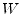 and the width of the slots 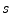. The structure is obviously symmetrical along a vertical plane running in the middle of the central strip.
The other coplanar line, called a coplanar slot (CPS) is the complementary of that topology, consisting of two strips running side by side.
A CPW can be quasi-statically analysed by the use of conformal mappings. Briefly speaking, it consists in transforming the geometry of the PCB into another conformation, whose properties make the computations straightforward. The interested reader can consult the pp. 886 - 910 of [48] which has a correct coverage of both the theoretical and applied methods. The French reader interested in the mathematical arcanes involved is referred to the second chapter of [49] (which may be out of print nowadays), for an extensive review of all the theoretical framework. The following analysis is mainly borrowed from [39], pp. 375 et seq. with additions from [48].
The CPW of negligible thickness located on top of an infinitely deep substrate, as shown on the left of the figure below, can be mapped into a parallel plate capacitor filled with dielectric 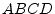 using the conformal function:
| 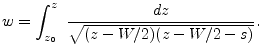 | (12.1) |
To further simplify the analysis, the original dielectric boundary is assumed to constitute a magnetic wall, so that 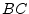 and 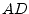 become magnetic walls too and there is no resulting fringing field in the resulting capacitor. With that assumption, the capacitance per unit length is merely the sum of the top (air filled) and bottom (dielectric filled) partial capacitances. The latter is given by:
| 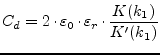 | (12.2) |
while the former is:
| 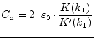 | (12.3) |
In both formulae  and 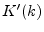 represent the complete elliptic
integral of the first kind and its complement, and
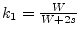. While the separate evaluation of
and 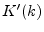 represent the complete elliptic
integral of the first kind and its complement, and
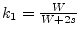. While the separate evaluation of  and 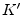 is
more or less tricky, the 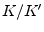 ratio lets itself compute efficiently
through the following formulae:
and 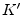 is
more or less tricky, the 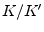 ratio lets itself compute efficiently
through the following formulae:
| 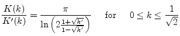 | (12.4) |
| 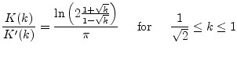 | (12.5) |
with 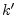 being the complementary modulus: 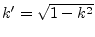. While [48] states that the accuracy of the above formulae is close to 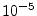, [39] claims it to be 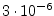. It can be considered as exact for any practical purposes.
The total line capacitance is thus the sum of  and 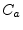. The
effective permittivity is therefore:
and 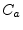. The
effective permittivity is therefore:
| 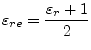 | (12.6) |
and the impedance:
|
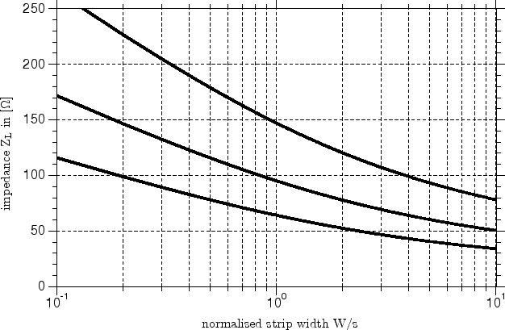
|
In practical cases, the substrate has a finite thickness  . To
carry out the analysis of this conformation, a preliminary conformal
mapping transforms the finite thickness dielectric into an infinite
thickness one. Only the effective permittivity is altered; it
becomes:
. To
carry out the analysis of this conformation, a preliminary conformal
mapping transforms the finite thickness dielectric into an infinite
thickness one. Only the effective permittivity is altered; it
becomes:
| 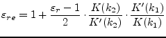 | (12.8) |
where 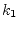 is given above and
| 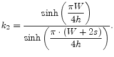 | (12.9) |
Finally, let us consider a CPW over a finite thickness dielectric backed by an infinite ground plane. In this case, the quasi-TEM wave is an hybrid between microstrip and true CPW mode. The equations then become:
| 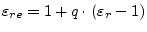 | (12.10) |
where , called filling factor is given by:
| 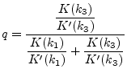 | (12.11) |
and
| 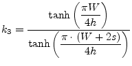 | (12.12) |
The impedance of this line amounts to:
| 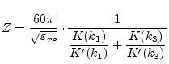 | (12.13) |
In most practical cases, the strips are very thin, yet their thickness cannot be entirely neglected. A first order correction to take into account the non-zero thickness of the conductor is given by [39]:
| 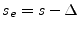 | (12.14) |
and
| 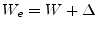 | (12.15) |
where
 |
(12.16) |
In the computation of the impedance, both the and the effective dielectric constant are affected, wherefore must be substituted by an ``effective'' modulus 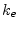, with:
| 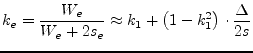 | (12.17) |
and
| 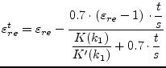 | (12.18) |
The effects of dispersion in CPW are similar to those encountered in the microstrip lines, though the net effect on impedance is somewhat different. [39] gives a closed form expression to compute 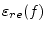 from its quasi-static value:
| 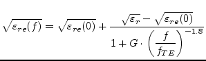 | (12.19) |
where:
| 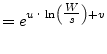 | (12.20) | |
| 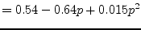 | (12.21) | |
| 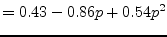 | (12.22) | |
| 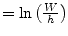 | (12.23) |
and  is the cut-off frequency of the 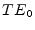 mode, defined by:
is the cut-off frequency of the 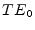 mode, defined by:
| 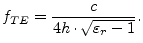 | (12.24) |
This dispersion expression was first reported by [50] and
has been reused and extended in [51]. The accuracy of
this expression is claimed to be better than 5% for
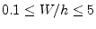,
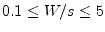,
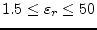 and
 .
.
As for microstrip lines, the losses in CPW results of at least two
factors: a dielectric loss  and conductor losses
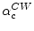. The dielectric loss
and conductor losses
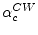. The dielectric loss  is identical to the
microstrip case, see eq. (11.79) on page
is identical to the
microstrip case, see eq. (11.79) on page
![[*]](crossref.png) .
.
The part of the losses is more complex to evaluate. As a general rule, it might be written:
| (12.25) |
where stands for the impedance of the coplanar waveguide
with air as dielectric and is the surface resistivity of the
conductors (see eq. (11.81) on page ).
Through a direct approach evaluating the losses by conformal mapping of the current density, one obtains [39], first reported in [52] and finally applied to coplanar lines by [53]:
| (12.26) |
In the formula above, and it is assumed that and .
The computation of the coplanar waveguide lines S- and Y-parameters is
equal to all transmission lines (see section
section 9.20 on page ).